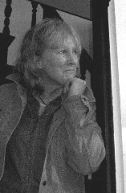
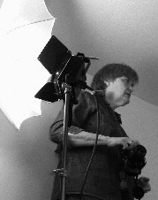
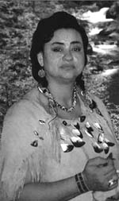
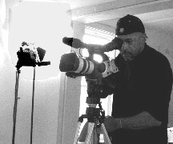
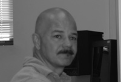
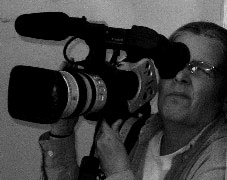
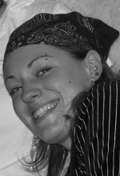
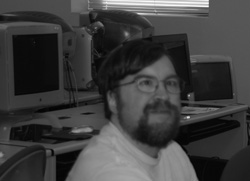

Chief Sachem Matthew Thomas writes about Shifting Visions Films:
"We applaud the efforts of this passionate group as they struggle to
create a story on our behalf." Read
the entire letter |
ALEXIA
KOSMIDER - PRODUCER
brings an eclectic background to this film for her life experiences
are varied—designing tiles in Santa Fe, New Mexico, waiting
tables, until she went to graduate school at the University of New
Mexico in Albuquerque, New Mexico. Here, Alexia became profoundly
interested in the Pueblo, Apache, and Navaho cultures that form
the rich cultural fabric of New Mexico communities.
She finished graduate school and enrolled in Brown University and
later at the University of Rhode Island where she wrote her dissertation,
now a book on Alex Posey—at that time Alex Posey was an unknown
Muscogee who wrote with a sardonic bite about what he observed in
Indian Territory—the divestment of Indian land by the Dawes
Commission and the corruptible politicians; his words woke up some
people about the relations of Indians with Euro-American culture.
“Legacies” is a natural progression of the things that
Alexia values in life--trying to get at the heart of what is real
and vital to cultures. As a teacher, she always tries to ask the
hard questions that compel students to think about their beliefs—whether
it’s about systemic racism or calling a person a derogatory
word--all of these injustices perpetuate unwholesome environments.
This film also asks hard questions that many New Englanders are
afraid to confront—why haven’t the Narragansetts disappeared?
Why are they angry or disappointed with the Governor’s and
the commission’s ruling?
LESLIE
LANGLEY - DIRECTOR
Leslie's
daughter says that she is nosy—perhaps she is, but Leslie likes
to think of herself as inquisitive. As a college student, Leslie looked
to books for answers and then later, studied video, film, and found
her voice—a way to focus an audience on a people or situation.
Her past work—public service announcements—one for Rosie's
Place: “Rose's More Than Just a Shelter” won an Emmy Award
and an outstanding PSA. Another, “Lucy's Story” won a CVF/Bravo
ATE Award. Other work—a one-woman drama on a local poet, Anne
Sexton-- all of her work has a similar theme—focusing on people
who are trying to find their place in our many-layered world. It is
not surprising then, when Alexia and Leslie crossed paths about two
years ago, after a long absence that they took up where they had parted—Alexia
and Leslie had taken a course on American Indian Literature at the University
of Rhode Island with Professor Stinebeck—now Alexia was teaching
that same course at URI. They talked about the course and how the students
were unaware of the Narragansetts' presence in Rhode Island . They spoke
of films and then began collaborating on their documentary: The Legacies
of the Narragansetts.
DEBORAH
SPEARS MOOREHEAD
NATIVE AMERICAN CONSULTANT
Debbie is a Wampanoag/Narragansett Artist whose art features traditional
Northeastern Indian stylized painting; her murals appear at the Rhode
Island Indian Council and other non-profit agencies in the New England;
she also has participated in art shows at Brown University (1991 and
2001) Three Rivers Community College (2001), and Quinebaug Valley Community
College (2002). In 1996, Debbie founded Nettukusq Singers, an all Native
American women vocal group that focuses on singing and teaching traditional
Eastern Algonquin Native American music. The Nettukusq Singers performed
for the Trinity Repertory Theater opening song for William Yellow Robe’s
play Grandchildren of the Buffalo Soldier (2003). Debbie also served
as a Native American Consultant for the Magic Stone produced by Laura
Productions (1997)
LYNDA C. MARTEL: MARKETING CONSULTANT
Having worked in the field of branding, marketing and advertising for
the past 20 years, Lynda has developed successful marketing strategies
and communications programs for regional, national and international
businesses, positioning their products and services effectively to customers
in a wide variety of market venues with their own unique mix of challenges.
With a passion for problem-solving and a vertical learning curve, Lynda
has served the needs and moved swiftly through the ranks of business-to-business
advertising agencies, publishing companies, and international corporations
-eventually owning her own market consulting firm. Anxious to
apply her talents to companies more in line with her personal values,
she abandoned the rigors of the rat-race to support the growth and development
of an award-winning landscape design and construction firm in RI, a
position which affords her the opportunity to advance the education
and business skills of the RI Nursery and Landscape Industry at large.
VINCE
R. JOHNSON - EDITOR/VIDEOGRAPHER
Vince has
produced videos for the Rhode Island Food Bank, Rhode Island Department
of Housing, and The Center for Nonviolence and Peace Studies at URI
and the URI Women's Center. In 2003, he shot, interviewed, and edited
a video for the Center for Nonviolence and Peace Studies, on Yolanda
Gaviria, widow of the slain, former Governor of Antioquia, Colombia,
Gillermo Gaviria, who was kidnapped and killed by the Armed Forces Revolutionary
Group, known as the FARC. Vince's personal accomplishments include the
University of Rhode Island 's "Visualizations" Film Festival
Award (2002) and 2003 for a commercial, "Brewed Awakenings"
and a short film that examines the objectification of women in film
entitled, "Visual Matters.” He currently works with the Rhode
Island International Film Festival as the liaison between URI and the
festival. In 2003, Vince put together a film tribute to long time actor,
Seymour Cassel was given the Lifetime Achievement Award by the festival.
Vince is currently a senior at URI, majoring in Communications and Women
Studies, and minoring in film.
VICTOR
GONZALEZ: VIDEOGRAPHER
Since 2001, Victor is the Coordinator of Media Services at the University
of Rhode Island 's Alan Feinstein College of Continuing Education, Providence
Campus. He has a wide and diverse experience in media communication,
including creating the television studio for the Alan Feinstein URI
Continuing College of Education, serving as Editor for video mainstreaming
for University of Rhode Island , Kingston , live production for Distance
Education and producing videos and stills for the University of Rhode
Island . Victor holds a B. A. in Psychology and a minor in Video Art
from the University of Rhode Island (1993). He also served ten years
in the Marine Corps.
ANDRÉ
CHARPENTIER: VIDEOGRAPHER
André
was the videographer and editor for “Monsters and Madmen,”
an independent film (2002) and editor and videographer in “World
of Wrong,” another independent film (2001). Since 2001, Andre
has worked for “A Better Sound Inc.,” which produces wedding
videos. He also has volunteered for Rhode Island Council of the Humanities’s
(RICH) 2002-2003 Freedom Film Fest. Andre is also a graduate of the
URI Multimedia Certificate Program and stage volunteer for RIIFF. In
2004, Andre will graduate from the University of Rhode Island’s
Alan Feinstein’s College of Continuing Education with a degree
in Film Studies.
DEBBIE
MONUTEAUX: VIDEOGRAPHER 
Debbie was the videographer for “Monsters and Madmen,”
an independent film (2003). In February 2004, she was videographer for
William Yellow Robe's reading at the University of Rhode Island Alan
Feinstein's Continuing Education Providence Campus. This film will soon
be screened on local cable television. She is also on the staff of the
URI CCE's Student Government Board's Television Program, which is seen
on public access cable. She is a member of Cinephilles, an organization
for local directors. Debbie is majoring in Women's Studies and minoring
in Film Studies.
DONNA
O'BRIEN: PHOTOGRAPHER
Donna is a student at RISD (Rhode Island School of Design) majoring
in photography. Donna is from Chicago , Illinois . Art is her passion
and future career.
GORDON
TAYLOR : WEB
G ordon was born in Central Falls , Rhode Island and grew up in Pawtucket
, next door. He discovered computers in the mid 90s when he started
a degree program at URI. His major was psychology but he found out by
accident that computers and he had an affinity for each other. Gordon's
also is a history buff and a science fiction fan. He enjoys writing
and has started a novel that he hopes may be published some day.
|